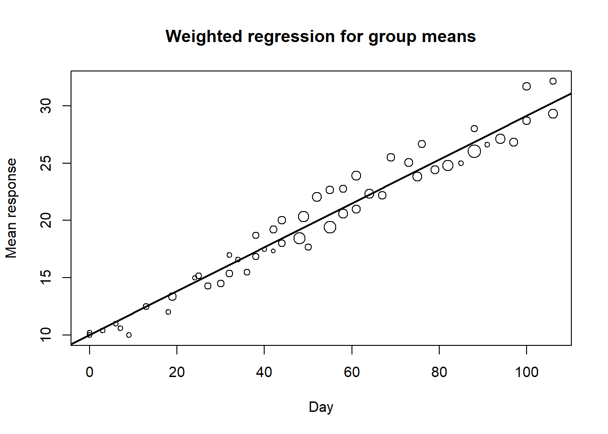

선형회귀모형은 오차항이 서로 독립이고, 모든 관측값에서 같은 분산을 가진다고 가정하였다. 그러나 실제 자료에서는 오차항의 분산이 관측값마다 다르거나, 시간 순서로 관측된 자료에서 오차항끼리 서로 상관되어 있을 수 있다. 이 경우 일반 최소제곱법은 여전히 회귀계수의 불편추정량을 줄 수 있지만, 가장 효율적인 추정량은 아닐 수 있다. 또한 표준오차와 p-value가 부정확해질 수 있으므로 적절한 보정이 필요하다.
이 장에서 특히 중요하게 생각해야 할 질문은 다음과 같다.
오차항의 분산이 관측값마다 다르면 왜 문제가 되는가?
가중치를 크게 주는 관측값은 회귀식에 어떤 영향을 더 크게 미치는가?
집단평균 자료에서 표본 수를 가중치로 사용하는 이유는 무엇인가?
시간자료에서 잔차의 자기상관을 고려하지 않으면 어떤 문제가 생기는가?
WLS와 GLS는 언제 사용해야 하는가?
8.1 일반화 회귀모형
\(k\)개의 설명변수 \(X_1, X_2, \ldots, X_k\)와 반응변수 \(Y\)에 대한 일반적인 다중선형회귀모형은 다음과 같이 쓸 수 있다.
여기서 \(\boldsymbol{\Sigma}\)는 오차항의 상대적인 분산-공분산 구조를 나타내는 대칭 양정치 행렬이다.
일반화 회귀모형은 일반 선형회귀모형보다 더 넓은 형태의 모형이다. 일반 선형회귀모형에서는 \(\boldsymbol{\Sigma}=\mathbf{I}\)라고 가정하지만, 일반화 회귀모형에서는 오차항 사이의 상관이나 서로 다른 분산을 허용한다. 따라서 자료에 이분산성이나 자기상관이 존재할 때 더 적절한 추정과 추론을 가능하게 한다.
8.2 일반화 최소제곱법을 이용한 모수추정
일반화 회귀모형에서 회귀계수를 추정하기 위해서는 오차항의 분산-공분산 구조를 고려해야 한다. 일반화 최소제곱법(generalized least squares, GLS)은 다음의 일반화 잔차제곱합을 최소화한다.
R의 lm() 함수에서 weights는 관측값의 가중치를 의미한다. 즉, weights = w로 지정하면 다음을 최소화한다.
\[
\sum_{i=1}^n w_i e_i^2
\]
따라서 오차분산이 \(Var(\epsilon_i)=\sigma^2/w_i\)라고 생각되는 경우에는 weights = w를 사용한다. 반대로 어떤 값이 오차분산 자체를 의미한다면 그 역수, 즉 weights = 1/variance를 사용해야 한다.
예를 들어 집단평균 \(\\bar{Y}_i\)를 반응변수로 사용할 때, 각 집단의 표본 수가 \(n_i\)이면 평균의 분산은 대략 \(\sigma^2/n_i\)에 비례한다. 따라서 집단평균 회귀에서는 weights = n_i를 사용하는 것이 자연스럽다. 이는 표본 수가 큰 집단평균이 더 정밀하게 추정되었다고 보기 때문이다.
잔차그림은 모형이 자료의 패턴을 충분히 설명하는지 확인하는 데 사용된다. 선형모형에서 잔차에 곡선 패턴이 남아 있다면 이차항 또는 다른 비선형 항을 고려할 수 있다.
Example 2: McIntosh 사과나무 자료
이 예제는 집단평균 자료에서 가중회귀를 사용하는 대표적인 상황이다. 각 관측값은 개별 사과나무가 아니라 특정 시점의 평균값이며, 각 평균값은 서로 다른 가지 수 또는 표본 수에 근거한다. 표본 수가 클수록 평균값이 더 정밀하다고 볼 수 있으므로 표본 수 n을 가중치로 사용한다.
fit_apple_wls <-lm(ybar ~ day, data = apple, weights = n)summary(fit_apple_wls)
Call:
lm(formula = ybar ~ day, data = apple, weights = n)
Weighted Residuals:
Min 1Q Median 3Q Max
-6.053 -2.570 -1.056 3.145 8.382
Coefficients:
Estimate Std. Error t value Pr(>|t|)
(Intercept) 10.019139 0.412451 24.29 <2e-16 ***
day 0.191322 0.006338 30.19 <2e-16 ***
---
Signif. codes: 0 '***' 0.001 '**' 0.01 '*' 0.05 '.' 0.1 ' ' 1
Residual standard error: 3.876 on 50 degrees of freedom
Multiple R-squared: 0.948, Adjusted R-squared: 0.9469
F-statistic: 911.2 on 1 and 50 DF, p-value: < 2.2e-16
plot(apple$day, apple$ybar,xlab ="Day",ylab ="Mean response",main ="Weighted regression for group means",cex =sqrt(apple$n) /max(sqrt(apple$n)) *2)abline(fit_apple_wls, lwd =2)

여기서 중요한 점은 attach(apple)을 사용하지 않는 것이다. attach()를 사용하면 작업공간에 이미 존재하는 다른 n 객체가 weights = n에 잘못 사용될 수 있다. 이 경우 ybar ~ day에 사용되는 자료의 행 수와 가중치 벡터의 길이가 달라져 오류가 발생할 수 있다. 따라서 data = apple을 명시하고 weights = n을 사용하는 방식이 안전하다.
비가중회귀와 가중회귀 결과를 비교해보자.
fit_apple_ols <-lm(ybar ~ day, data = apple)summary(fit_apple_ols)
Call:
lm(formula = ybar ~ day, data = apple)
Residuals:
Min 1Q Median 3Q Max
-1.9982 -0.9071 -0.2529 0.9430 2.2521
Coefficients:
Estimate Std. Error t value Pr(>|t|)
(Intercept) 9.760514 0.335777 29.07 <2e-16 ***
day 0.196574 0.005628 34.93 <2e-16 ***
---
Signif. codes: 0 '***' 0.001 '**' 0.01 '*' 0.05 '.' 0.1 ' ' 1
Residual standard error: 1.207 on 50 degrees of freedom
Multiple R-squared: 0.9606, Adjusted R-squared: 0.9598
F-statistic: 1220 on 1 and 50 DF, p-value: < 2.2e-16
summary(fit_apple_wls)
Call:
lm(formula = ybar ~ day, data = apple, weights = n)
Weighted Residuals:
Min 1Q Median 3Q Max
-6.053 -2.570 -1.056 3.145 8.382
Coefficients:
Estimate Std. Error t value Pr(>|t|)
(Intercept) 10.019139 0.412451 24.29 <2e-16 ***
day 0.191322 0.006338 30.19 <2e-16 ***
---
Signif. codes: 0 '***' 0.001 '**' 0.01 '*' 0.05 '.' 0.1 ' ' 1
Residual standard error: 3.876 on 50 degrees of freedom
Multiple R-squared: 0.948, Adjusted R-squared: 0.9469
F-statistic: 911.2 on 1 and 50 DF, p-value: < 2.2e-16
Generalized least squares fit by REML
Model: Employed ~ GNP + Population
Data: longley
AIC BIC logLik
44.66377 47.48852 -17.33188
Correlation Structure: AR(1)
Formula: ~Year
Parameter estimate(s):
Phi
0.6441692
Coefficients:
Value Std.Error t-value p-value
(Intercept) 101.85813 14.198932 7.173647 0.0000
GNP 0.07207 0.010606 6.795485 0.0000
Population -0.54851 0.154130 -3.558778 0.0035
Correlation:
(Intr) GNP
GNP 0.943
Population -0.997 -0.966
Standardized residuals:
Min Q1 Med Q3 Max
-1.5924564 -0.5447822 -0.1055401 0.3639202 1.3281898
Residual standard error: 0.689207
Degrees of freedom: 16 total; 13 residual
nlme::intervals(fit_longley_gls)
Approximate 95% confidence intervals
Coefficients:
lower est. upper
(Intercept) 71.18320461 101.85813307 132.5330615
GNP 0.04915865 0.07207088 0.0949831
Population -0.88149053 -0.54851350 -0.2155365
Correlation structure:
lower est. upper
Phi -0.4452141 0.6441692 0.9646753
Residual standard error:
lower est. upper
0.2473156 0.6892070 1.9206484
GLS 모형은 오차항 사이의 상관구조를 반영하여 회귀계수와 표준오차를 추정한다. 따라서 OLS와 GLS의 회귀계수 추정값은 비슷하더라도 표준오차와 p-value는 달라질 수 있다. 시간자료에서 잔차의 자기상관이 의심되면 OLS 결과만으로 결론을 내리기보다 GLS 또는 다른 시계열 회귀모형을 고려하는 것이 좋다.
8.5 OLS, WLS, GLS의 비교
세 방법의 차이를 정리하면 다음과 같다.
방법
주요 가정
사용하는 상황
핵심 아이디어
OLS
오차항이 독립이고 등분산
기본 선형회귀분석
모든 관측값을 동일하게 취급
WLS
오차항은 독립이나 분산이 다름
이분산성, 집단평균 자료
정밀한 관측값에 더 큰 가중치 부여
GLS
오차항의 분산-공분산 구조가 일반적
자기상관, 군집상관, 복잡한 공분산 구조
공분산 구조를 반영하여 추정
WLS는 GLS의 특수한 형태이다. 오차항이 서로 독립이지만 분산이 다른 경우에는 WLS를 사용하고, 오차항 사이의 상관까지 고려해야 하는 경우에는 GLS를 사용한다. 그러나 실제 분석에서는 공분산 구조를 정확히 알기 어려운 경우가 많으므로, 잔차분석과 민감도 분석을 통해 모형 선택의 타당성을 검토해야 한다.